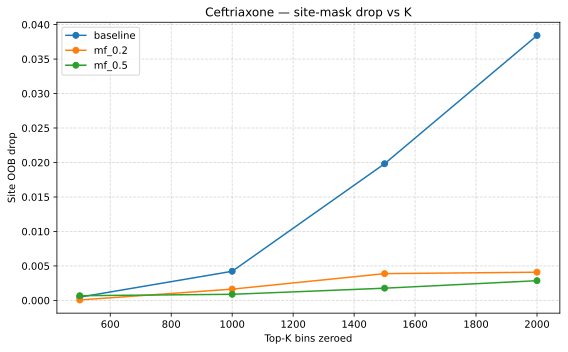
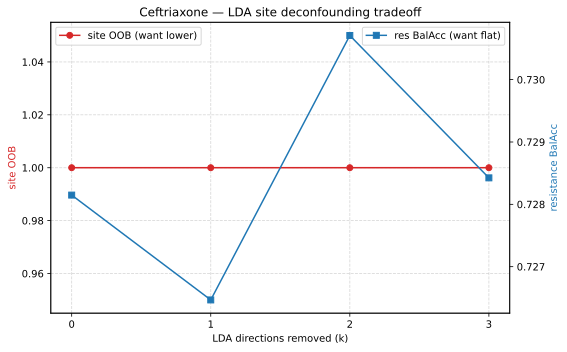

Mask & Deconfounding Diagnostics — Why Masking Fails
The Ceftriaxone 06-03c and 06-03d runs both found that zeroing species- or site-predictive bins did not improve worst-site Balanced Accuracy. This page documents the follow-up diagnostics that isolate why: species and site signals are non-linear, redundant across the spectrum, and (for site) entangled with resistance.
Species-Mask Diagnostic
Question
06-03c builds each site’s mask from the top-500 bins of a per-site
Random Forest trained to classify bacterial species. That RF uses the
default max_features="sqrt" (~77 of 6000 bins per split), which dilutes
Feature importance across correlated bins — the top-500 captured only
~70% of the importance mass. Was this “weak” mask an artifact of the RF
configuration, and would a better RF (higher max_features) produce a mask
that removes more species signal?
Method
06-03c-Phase1-Mask-Diagnostic.ipynb reuses the exact 06-03c data pipeline (same species-stratified split, downsampling, preprocessing, seed) and sweeps the per-site species RF over three configurations:
Name |
n_estimators |
max_depth |
min_samples_leaf |
max_features |
|---|---|---|---|---|
baseline |
300 |
20 |
5 |
sqrt (default) |
mf_0.2 |
300 |
20 |
5 |
0.2 |
mf_0.5 |
500 |
20 |
5 |
0.5 |
For each configuration, per site, it records:
out-of-bag (OOB) species classification accuracy,
importance concentration at top-100/500/1000,
union/majoritymask sizes and pairwise site overlap,the masking-drop: the OOB drop when the top-500 bins are zeroed before retraining — a direct measure of how much species signal the mask removes.
Results
config |
OOB |
masking-drop |
top-100 |
top-500 |
top-1000 |
overlap |
|---|---|---|---|---|---|---|
baseline |
0.944 |
+0.0127 |
34.1% |
73.9% |
89.2% |
51% |
mf_0.2 |
0.941 |
+0.0022 |
73.5% |
93.6% |
97.1% |
46% |
mf_0.5 |
0.937 |
+0.0029 |
84.2% |
95.4% |
97.6% |
42% |
Three observations:
Importance concentrates — raising
max_featurespushes top-500 concentration from 74% to 95% (and top-100 from 34% to 84%), confirming the defaultsqrtwas smearing importance across correlated bins.The masking-drop stays near zero — and shrinks from +1.3% to +0.2%, with several sites going negative (zeroing the bins slightly helps species classification). The concentrated bins are not more informative.
OOB is flat and overlap drops — species classification stays ~0.94 in all configs, while pairwise mask overlap falls 51% to 42% (concentrated masks are more site-specific).
Interpretation
Feature importance concentration is not the same as unique information. Even with 95% of the Gini importance packed into the top-500, zeroing those bins removes essentially no species signal — the RF re-learns it from the remaining 5,500 correlated bins. Species information is redundant across the whole spectrum and cannot be localized to a few hundred m/z bins.
Site-Deconfounding Diagnostics
The site-masked counterpart (06-03d) asks whether the site/instrument signal can be removed to narrow the Cross-site evaluation gap. Three approaches were tried, and all three failed.
The companion pipeline run
(06-03d-Site-Masked-Ceftriaxone-Federated.ipynb,
2026-10-15) later selected the site mask as the best of the four
variants — it minimised the centralized → A→B+C+D gap (0.762 vs 0.619
BalAcc, a 0.143 gap, against 0.145 for none, 0.158 for species and
0.155 for double). The improvement over no masking is marginal, in line
with the diagnostics below.
Site mask (drop vs K)
06-03d-Phase1-SiteMask-Diagnostic.ipynb zeroes the top-K site bins and measures the site-RF OOB drop (pooled site RF, OOB = 1.000):
config |
K=500 |
K=1000 |
K=1500 |
K=2000 |
|---|---|---|---|---|
baseline (sqrt) |
+0.0005 |
+0.0042 |
+0.0198 |
+0.0384 |
mf_0.2 |
+0.0001 |
+0.0016 |
+0.0039 |
+0.0041 |
Even zeroing 2,000 of 6,000 bins leaves site classification at ~96–99.6%. The site signal is redundant across the spectrum, exactly like species.


Site-RF out-of-bag accuracy drop when the top-K site-predictive bins are
zeroed, for the baseline and concentrated (mf_0.2 / mf_0.5)
species/site RF configurations. Even K = 2,000 (one third of the
spectrum) leaves classification near ceiling.
LDA projection
06-03d-SiteDeconfound-Diagnostic.ipynb projects out the linear
site-discriminative directions. LDA itself classifies site at 0.0993
(well below the 0.25 chance), and projecting out its directions leaves the
site-RF OOB at 1.0. Because per-site log1p+standardize already zeroes each
site’s mean, the surviving site signal is non-linear — invisible to linear
methods.


LDA site-deconfounding trade-off: site-RF out-of-bag accuracy (left axis) stays at 1.000 for every number of projected-out directions (k = 0–3), while resistance Balanced Accuracy (right axis) is unchanged — removing the linear site directions removes no site signal.
Adversarial site-invariance
06-03d-AdversarialSite-Diagnostic.ipynb trains a resistance MLP with a gradient-reversal site head (DANN). The site-probe accuracy rose with the reversal weight (0.66 → 0.72) instead of falling toward 0.25, and resistance (~0.76 centralised, ~0.55 cross-site) stayed flat. The features cannot be made site-invariant because site is entangled with resistance — different hospitals have genuinely different resistance, so the resistance objective itself rewards site-informative features.
Approach |
Result |
Why it failed |
|---|---|---|
mask top-K bins |
site OOB barely drops |
signal redundant across bins |
LDA projection |
no effect (LDA < chance) |
signal non-linear |
adversarial GRL |
site probe rises |
site entangled with resistance |
Conclusion
Species and site deconfounding both fail, for overlapping reasons:
Species and site signals are non-linear and redundant across the spectrum, so neither zeroing bins nor linear projection removes them.
Site is additionally entangled with resistance (different hospitals have different resistance), so even adversarial training cannot make features site-invariant.
The cross-site gap (~0.20 Balanced Accuracy) is therefore a genuine, hard Domain shift cost, not an artifact of the masking approach.
The practical implication is that MALDI-TOF AMR models are site-specific, and cross-site generalisation is best handled by Federated learning (each site trains locally) rather than by deconfounding the raw spectra.
The 08 UMAP diagnostics (UMAP Diagnostics) quantify this result: site separability measured by classifier probes is essentially unchanged after zeroing the species masks (unmasked, majority and union), on all four sites.
Files
06-03c-Phase1-Mask-Diagnostic.ipynb — species-mask diagnostic
06-03d-Phase1-SiteMask-Diagnostic.ipynb — site-mask drop-vs-K diagnostic
06-03d-SiteDeconfound-Diagnostic.ipynb — LDA site-deconfounding diagnostic
06-03d-AdversarialSite-Diagnostic.ipynb — adversarial site-invariance diagnostic
outputs:
mask_diagnostic.csv,site_mask_drop_vs_k.csv,site_deconfound_diagnostic.csv,adversarial_site_diagnostic.csv(+ PDFs)